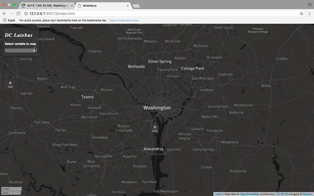
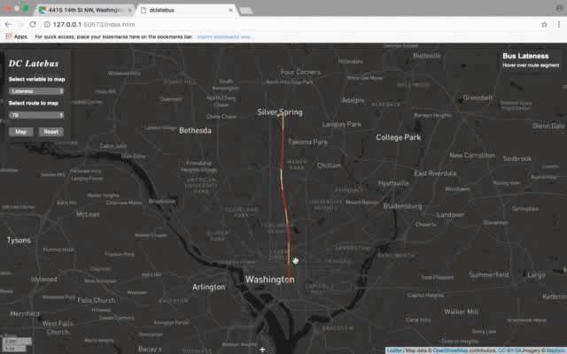
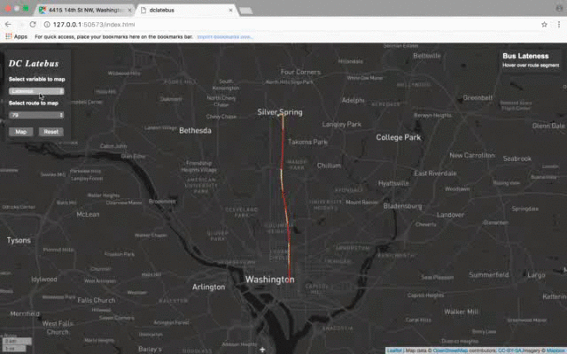
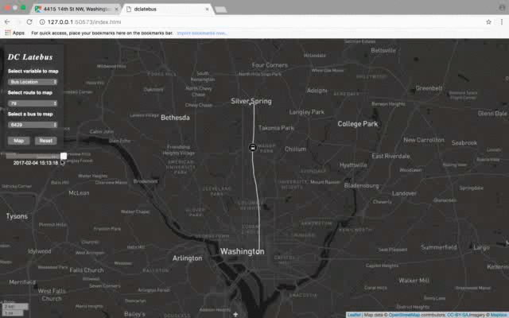

DC Latebus is a project intended to understand where, when, and how often public busses are ahead or behind schedule in DC. It achieves this by capturing, visualizing, storing, and analyzing public bus data provided by WMATA through its API.
The project consists of three components.
The motivation for this project is three fold.
First, I want to figure out where, when, and how often busses deviate from schedule because transit service reliability, which bus lateness runs counter to, is a key factor in peoples' transit choices. So, understanding reasons underlying a bus being late can inform planning measures to increase service reliability and hopefully the number of people who use the bus.
Second, people of different socio-economic backgrounds take the bus to and from different places across the city, and may do so at different times during the day. So, understanding where and when busses are late can potentially point to communities who do not enjoy reliable bus service.
Third, I think transit systems, programming, and geography rule. This project includes them all, so naturally it rules too.
Currently, the visualization has two components:
An interactive map that shows the median daily deviation from schedule for segments along each bus route. Additionally this component shows information about bus stops and the minimum and maximum deviations for each segment along the route.
An interactive map that shows busses that traveled along routes, illustrating where busses were throughout the day.
Users show these different components with a user interface located on the page's top left. The interface can be used as follows:
First select the 'variable to map', either 'Lateness' or 'Bus Location'
Then select the 'route to map'. If you are mapping 'bus location', a busses dropdown will appear. Select the bus you want to map from there.
Then map it!

When mapping lateness, hovering over route segments tells more about the segment, like the bus stops a
segment is in-between and other deviation statistics.

If a user clicks on a segment, the app will zoom to its bounds. To zoom back out, click the button of
DC that appears.

When mapping bus location, a slider appears underneath the main user interface that users can use to show
where a given bus was throughout the day.

If at anytime a user wants to reset the app to its original state, just hit reset!
Data processing for this project consisted of three steps:


So what's next? A lot honestly.
First and foremost, I need to switch from using PostGIS. PostgreSQL limits tables at 1600 columns. The frequency I run my scripts easily fills this up in 3 or 4 hours.
Second, I need to devise a less sloppy means to save data to a database. My current approach, writing lists of dissimilar lengths to a 2-dimensional table works well for PostGIS, but because I have to worry about storage space, moving to something like MongoDB so I can mimique a JSON makes a lot of sense. Plus, this would limit the number of records I write upon each iteration of running route_lateness.R to only a handful. I'd imagine this would be much more efficient than my current method as I'd only write data to segments that buffer busses, rather than writing data to all segments like I am currently.
Third, I need to give my visualization a finer temporal resolution and explore ways to use time as the control variable for what is visualized. To the first point, who cares if the bus was late an average of 5 minutes today? Peoples' daily commute times happen in a bandwidth of a few hours, perhaps between 6am and 10am or 5pm and 7pm. The viz would provide much better visual insight into when busses are late if I make this switch. To the later point, I might be better suited visualizing what underlies the second motivation if I'm showing where busses tend to be late at different times of the day throughout the entire system. Visualizing routes without comparison to other routes provide little insight.
Forth, I need to research the subject myself and talk to my professor about how to do time space clustering (think Moran's I across time) for connected line segments. This sort of analysis can show if bus lateness across time and space is random or non-random. If I can make an assertion that lateness is not non-random, I can start looking into some of the 'motivations' for this project in-depth. Specifically, if I know lateness is not random at a certain place and time I can start to investigate why and share that with planners.
Fifth, I need to talk to experts because I am not one. Taking only one transportation geography class isn't enough to claim I know what I'm doing, and those who think about bus systems for a living might help push me in the right direction as I continue with this project.
Lastly, I need a partner (or partners) in crime. I want to get better at coding and learn from people. Building a team would help do that. Plus, just like I'm not an expert studier of transportation, I am not an expert geospatial developer, backend developer, front end developer, ect. Finding partners that are these things can make the final product better, which is ultimately what I care about.
Thanks!
🚌 🚌 🚌